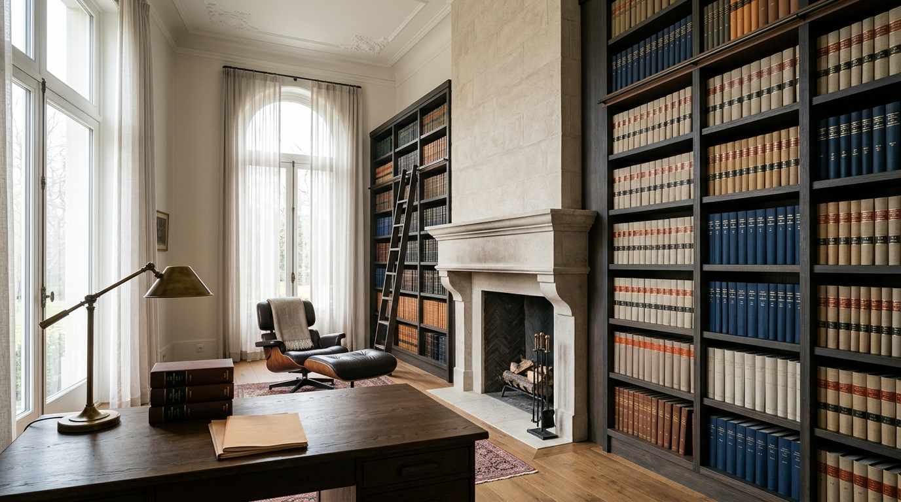

Atención presencial ordenada en Cuenca
Las reuniones presenciales se estructuran previa agenda en horario visible de 24 horas para revisar antecedentes en un ambiente reservado y tranquilo.
Valdivieso & Asociados es un estudio jurídico ficticio de demostración diseñado por AV·STUDIO. Presenta una arquitectura sobria, precisa y ordenada para bufetes y abogados independientes en Ecuador, sin promesas ni automatizaciones jurídicas.

SECCIÓN II · ENFOQUE PROFESIONAL
“La presentación de un estudio jurídico exige rigor en las palabras, orden documental y transparencia sobre el alcance de cada encuentro.”
Nota informativa: los contenidos de esta demostración tienen fines exclusivamente ilustrativos y no constituyen asesoramiento jurídico personalizado ni generan relación abogado-cliente.
Las reuniones presenciales se estructuran previa agenda en horario visible de 24 horas para revisar antecedentes en un ambiente reservado y tranquilo.
Antes de asumir un encargo real, el estudio evalúa la documentación base y define por escrito el alcance del análisis sin promesas ni garantías de resultado judicial.
Para clientes con operaciones fuera de Cuenca o consultas preliminares a distancia, se contempla la modalidad virtual con la misma estructura informativa previa.
SECCIÓN III · ÍNDICE DE PRÁCTICA
Selecciona una materia del índice para examinar su descripción general, alcance preventivo y acceso directo a consulta informativa.
Aspectos contemplados en el ejemplo
SECCIÓN IV · PROTOCOLO DE CONSULTA INFORMATIVA
Un esquema claro para explicar cómo se organiza el primer contacto demostrativo, sin simular seguimiento automático ni gestión de expedientes judiciales.
El interesado indica su nombre o razón social, el área de práctica y un planteamiento general sin adjuntar información reservada ni documentos confidenciales.
Se organiza la solicitud según corresponda a derecho societario, civil, laboral o marcario, eligiendo atención presencial en Cuenca o videollamada.
En una reunión real posterior se revisan los documentos pertinentes y se delimita el marco jurídico de actuación sin asegurar desenlaces procesales.
La demostración prepara el resumen estructurado hacia WhatsApp para evaluar la fluidez del contacto inicial entre cliente y estudio.
SECCIÓN V · DOCUMENTACIÓN Y ANÁLISIS
La actividad jurídica preventiva descansa sobre la lectura metódica de antecedentes. Esta muestra visual ilustra cómo un despacho presenta su disciplina documental y sus salas de reunión, sin ofrecer minutas genéricas ni modelos que reemplacen una revisión profesional.
Fotografías arquitectónicas e ilustrativas de ejemplo; no corresponden a oficinas o archivos reales.
SECCIÓN VI · ESTRUCTURA DEL ESTUDIO
Compromiso de veracidad: Valdivieso & Asociados es una firma ficticia demostrativa. Esta composición tipográfica muestra dónde un estudio real consigna socios, matrículas verificables del Foro de Abogados y publicaciones, sin inventar nombres, credenciales ni retratos profesionales.
Constitución de SAS y Cía. Ltda., estatutos, pactos de socios y contratos mercantiles.
Estudio de títulos, promesas de compraventa, arrendamientos y mediación civil.
Auditoría de carpetas laborales, normativa ecuatoriana y registro de marcas ante SENADI.
SECCIÓN VII · CLARIDAD OPERATIVA
Consultas habituales respondidas estrictamente según la información demostrativa del sitio, sin establecer tarifarios cerrados ni promesas legales.
Contempla cuatro bloques preventivos y patrimoniales de ejemplo: Derecho Societario y Corporativo, Derecho Civil y Bienes Raíces, Asesoría Laboral Preventiva y Propiedad Intelectual y Marcas (incluyendo búsqueda y solicitud ante SENADI).
Se muestran reuniones presenciales en Cuenca (referencia Av. Remigio Crespo y Unidad Nacional / Sector Estadio Av. Solano) y videollamadas, dentro de un horario referencial de lunes a viernes de 08:30 a 18:00 en formato 24h.
No. En esta demostración se indica que el alcance y los honorarios se delimitan tras la revisión documental previa de cada caso real, evitando promesas sobre resultados judiciales.
No. Valdivieso & Asociados es un modelo demostrativo de AV·STUDIO: no guarda expedientes ni constituye asesoría jurídica personalizada; únicamente valida el formulario para redactar un mensaje de prueba hacia WhatsApp.
SECCIÓN VIII · CONSULTA INICIAL
Selecciona el área jurídica y la modalidad preferida para comprobar cómo el sitio valida los datos esenciales antes de abrir WhatsApp dirigido a AV·STUDIO.